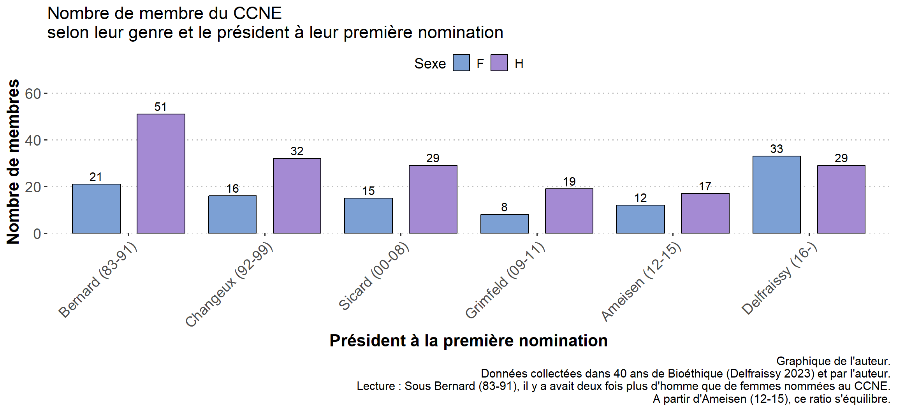

Professions des membres du CCNE
1 Retour aux choix
2 Point sur la méthodologie
Par simplicité, j’ai attribué à chaque membre le président en exercice au moment de sa nomination. Cela permet d’avoir un indicateur de temps simple pour comparer, mais cela ne donne pas à chaque instant t, la composition du CCNE. De plus je n’ai que les années de nomination, a moins d’aller sur le JORF pour trouver toutes les dates de nomination, mais celle du JORF sont souvent en retard sur les dates réelles.
Voici une description des 12 catégories de professions recodées:
- Politicien ou militant : Inclut les personnes ayant une profession liée à la politique ou à l’activisme (notamment association de défense de la famille, beaucoup nommé par le Ministère de la famille), y compris ceux qui ont une carrière antérieure dans la médecine.
- Journaliste/presse : Regroupe les individus travaillant dans le journalisme ou les médias, dont les patrons de presse.
- Théologien : Comprend les personnes spécialisées dans la théologie, toutes religions comprises.
- Médecin PUPH : Se réfère aux médecins Professeurs des Universités-Praticiens Hospitaliers (PUPH), excluant les généralistes et libéraux.
- Chercheur bio : Regroupe les chercheurs en biologie, physiologie ou pharmacologie.
- Autres professions santé : Inclut les pharmaciens, infirmiers, psychologues, généralistes, et cadres supérieurs de santé.
- Profession du droit : Englobe les avocats, magistrats, juges et juristes, dont les conseillers d’état et membres de la cours de cassation.
- Cadre public/privé : Regroupe les hauts fonctionnaires, enarques, cadres et ingénieurs. Un certain nombre de personnes ont été haut fonctionnaire puis cadre de grands groupes industriels notamment dans les personnes nommées par le ministère de l’industrie. Peut être faudrait il séparer les hauts fonctionnaires selon leur type de spécialité.
- Chercheur droit : Juriste universitaire.
- Chercheur SHS (Sciences Humaines et Sociales) : Inclut les chercheurs en sociologie, anthropologie, histoire, économie, psychologie, démographie, philosophie, géographie, sciences politiques, littérature, muséologie, et des spécialistes universitaires des religions (judaïsme notamment)
- Chercheur sciences exactes : Regroupe les chercheurs en mathématiques, chimie, physique et informatique.
- Inconnue : Catégorie pour les professions qui ne correspondent à aucune des précédentes ou dont les informations sont insuffisantes pour le recodage.
3 Description des membres du CCNE
3.1 Nombre de membres
3.1.1 Selon la profession

Sans trop d’étonnement, la profession dominante sont les médecins hospitaliers et universitaires (PUPH), suivi de près par les chercheurs en sciences humaines (en majorité en philosophie), puis les biologistes et les politiciens (dont un certain nombre sont des médecins, mais plutôt libéraux). Pour finir le droit est aussi bien représenté entre les membres du conseil d’état, de la cour de cassation, des juristes (de profession ou universitaires).
3.1.2 Selon le genre

3.2 durée mandat
3.2.1 Selon le genre et le président

On voit que la durée du mandat est a eu tendance à baisser et à se normaliser autour de 5 ans, avec encore quelques personnes qui font plus.
3.3 Âge à la première nomination
3.3.1 Selon la profession

Globalement les membres du CCNE sont assez âgés quand ils sont nommés pour la première fois, à l’exception notable des théologiens (toutes religions comprises). L’âge moyen est de 60 ans sur l’ensemble des membres. Aucune tendance en terme d’évolution de l’âge à la première nomination semble vraiment être identifiable.
3.4 Complétude des données récoltées

On voit qu’il y a une différence de genre : il est plus dure de trouver certaines informations pour les femmes.
4 Nombre de participation à un avis, et différence selon la participation à l’écriture d’avis
On se limite aux membres du CCNE qui l’ont rejoint après (ou égale) à 2002, car c’est à partir de là qu’on a des informations quasi exhaustive sur les auteurs des avis.
4.1 Histo participation
4.2 Histo rapporteurs

4.3 Rapporteurs selon profession